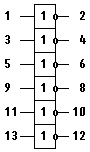

Микросхема К155ЛН1 (КМ155ЛН1)
Микросхемы К155ЛН1, КМ155ЛН1 представляет собой шесть логических элементов НЕ. У микросхем К155ЛН1, КМ155ЛН1 инверторы снабжены двухтактным выходным каскадом. Наибольший ток (I1пот) микросхемы К155ЛН1, КМ155ЛН1 потребляют, если на всех шести входах присутствуют напряжения высокого уровня. Если на всех входах присутствуют напряжения низкого уровня, то ток потребления (Ioпот) снижается в 2,2 раза.

Рис. 1 - Условное графическое изображение ИМС К155ЛН1 (КМ155ЛН1)
Корпус К155ЛН1 (7404) типа 201.14-1, масса около 1 грамма и у КМ155ЛН1 (7404) типа 201.14-8, масса около 2,2 грамма.
Таблица 1
| Параметр | Значение |
|---|---|
| Номинальное напряжение питания | 5В±5% |
| Выходное напряжение низкого уровня | ≤0,4 В |
| Выходное напряжение высокого уровня | ≥ 2,4 В |
| Входной ток низкого уровня | ≤ -1,6 мА |
| Входной ток высокого уровня | ≤ 0,04 мА |
| Входной пробивной ток | ≤ 1 мА |
| Ток потребления при низком уровне выходного напряжения | ≤ 33 мА |
| Ток потребления при высоком уровне выходного напряжения | ≤ 12 мА |
| Потребляемая статическая мощность на один логический элемент | ≤ 19,7 мВт |
| Время задержки распространения при включении | ≤ 15 нс |
| Время задержки распространения при выключении | ≤ 22 нс |
Зарубежный аналог
Зарубежным аналогом микросхем К155ЛН1 и КМ155ЛН1 является микросхема 7404.
Источники
microshemca.ru - Микросхемы К155ЛН1, КМ155ЛН1, 7404
chipinfo.ru - К155ЛН1, КМ155ЛН1 - шесть логических элементов НЕ